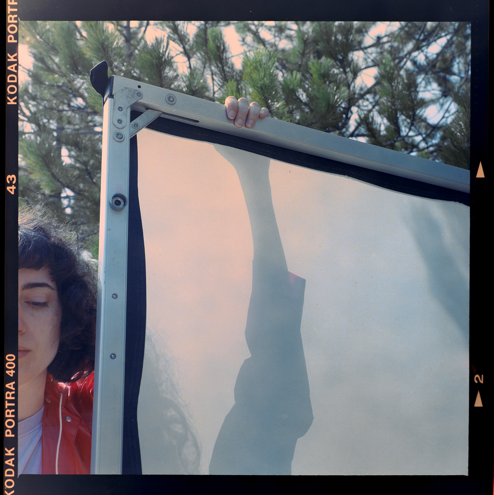
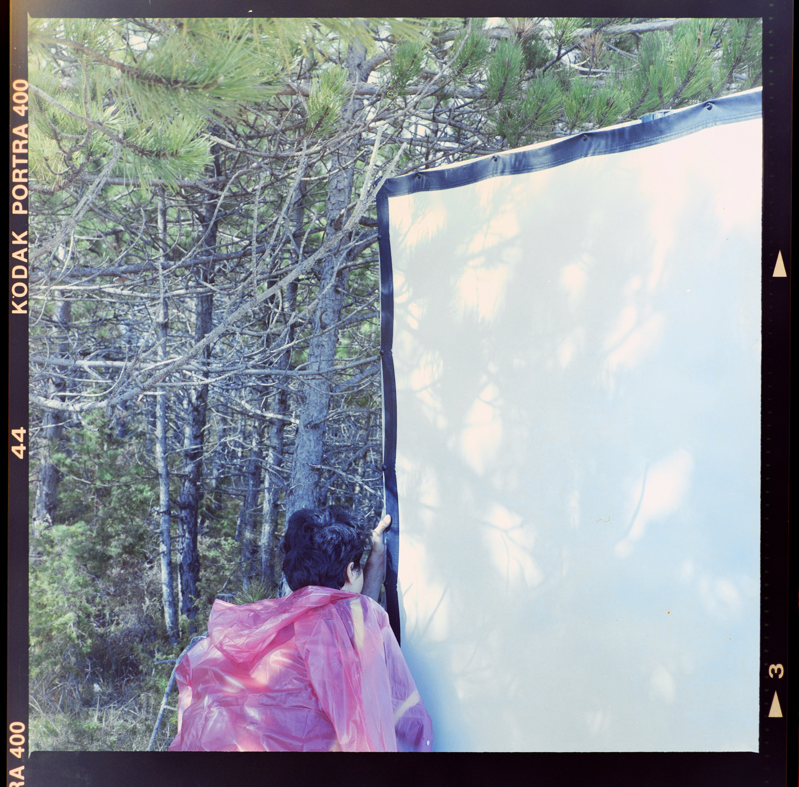

2022
Intervention in the landscape and film projection
Film (super8, colour, 3 mins, silent )
Portable/Foldable screen (3 x 4 meters)
Developed and presented with Las Synergies (Bruno Delgado Ramo, Paula Guerrero, Javi Montero)
Acciones para la pantalla is a sequence of actions performed outdoors & indoors with a screen. It was presented at Museo Oteiza in Pamplona and at Museum of Abstract Art (Fundación Juan March) in Cuenca
«The rectangle was here before we came, and it will be here after we have gone. [...] So it seems that a film is, first, a confined space, at which you and I, we, a great many people, are staring». (Hollis Frampton)
But if the light reflected on our faces came from a window, and the image projected parallel to it was lost in the sunlight of the landscape, if the film had been held in time for a week or so and we were there, observing and waiting, what form does the absence of the screen take then? We think of the missing rectangle and, however, from our empirical location and experience we have always seen a trapezoid, many of them, all different and each person, at each moment, had their own.
Activating the screen, giving it a certain autonomy, could help us confirm the proposition that Isidoro Valcárcel Medina points out in his '9 sequences on the screen': projection as a servant of the support on which it rests. In the projection environment, the level of attention of the audience fluctuates and is qualified according to different environmental parameters, while some specific elements are maintained, favoring that attention is a shared gesture, a filmic gesture. Hijacking the screen would undoubtedly disrupt attention, but what if the state of confusion and the need to find a support for the light brings back that shared gesture?
* * *
«El rectángulo estaba aquí antes de que llegáramos nosotros y aquí seguirá una vez nos hayamos ido. Así pues, parece que una película es, en primer lugar, un espacio delimitado al que [...] nosotros, una gran multitud, miramos fijamente». (Hollis Frampton)
Pero si la luz reflejada en nuestros rostros procediera de una ventana, y la imagen proyectada paralelamente a ella se perdiera en la claridad solar del paisaje, si la película se hubiera sostenido en el tiempo durante más o menos una semana y nos encontrásemos allí, observando, a la espera, ¿qué forma cobra entonces la ausencia de la pantalla? Pensamos en el rectángulo que falta y, sin embargo, desde nuestra ubicación y experiencia empíricas siempre vimos un trapecio, muchos de ellos, todos distintos y cada persona, en cada instante, teníamos el nuestro.
Poner en marcha la pantalla, dándole cierta autonomía, podría ayudarnos a confirmar la proposición que expone Isidoro Valcárcel Medina en 9 secuencias sobre la pantalla: la proyección como servidora del soporte sobre el que descansa. En el entorno de proyección, el nivel de atención de la audiencia fluctúa y se matiza según distintos parámetros ambientales, mientras algunos elementos concretos se mantienen, favoreciendo que la atención sea un gesto compartido, un gesto fílmico. Secuestrar la pantalla sería sin duda un elemento disruptor de la atención pero ¿y si el estado de confusión y la necesidad de búsqueda de un soporte para la luz nos devuelve ese gesto compartido?